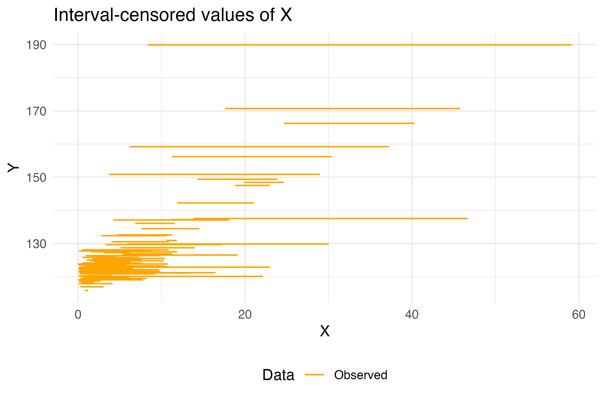

Bayesian interval regression with Stan
R
Stan
Bayesian
Regression
cmdstanr
statistics
Abstract
In this entry I discuss how to do a linear regression model when the dependent variable is represented as an interval. That is, when we only know ranges for \(X\) and we know there is a linear association between \(X\) and \(Y\).
The problem
Consider the following problem where we have measurements for the response variable \(Y\) and interval-valued dependent \(X\). As an example problem we can think of \(X\) as consumption levels for a nutrient (grams per day) and \(Y\) can be an outcome (systolic blood pressure). An example database would be as follows:
X | Y |
|---|---|
factor | numeric |
(1,3] | 123.7 |
(5,10] | 132.6 |
(1,3] | 120.1 |
(3,5] | 125.7 |
[0,1] | 115.8 |
(1,3] | 128.2 |
(1,3] | 122.9 |
(10,Inf] | 141.5 |
(1,3] | 117.8 |
[0,1] | 123.8 |
n: 100 | |
To solve this we’ll first review the classical formulation, then the interval-valued formulation and finally we’ll program it in Stan.
Classical model
A classical Bayesian linear regression model (if the complete \(X\) was observed) is given by: \[\begin{equation} Y|_{X = x} \sim \textrm{Normal}(\beta_0 + \beta_1 x, \sigma^2) \end{equation}\] with priors for the parameters: \[\begin{equation} \beta_0 \sim \textrm{Normal}(0,100), \quad \beta_1 \sim \textrm{Normal}(0,100), \quad \sigma \sim \textrm{Normal}_+(0,100). \end{equation}\]
written in terms of the likelihood is re presented as: \[\begin{equation} \begin{aligned} \mathcal{L}(\beta_0, \beta_1, \sigma | x, y) & \propto p(y,x | \beta_0,\beta_1,\sigma)\cdot p(\beta_0,\beta_1, \sigma) \\ & \propto p(y|x, \beta_0,\beta_1,\sigma) \cdot p(\beta_0,\beta_1, \sigma) \end{aligned} \end{equation}\]
This term assumes \(X\) is a constant and hence there is no need to specify a prior on \(X\) nor to include the term \(p(x| \beta_0,\beta_1,\sigma)\) in the likelihood. When \(X\) is considered a random variable, the distribution of \(X\) (say \(f_X\)) is included as a prior and in the likelihood too:
\[\begin{equation} X \sim f_ X\quad \text{and} \quad Y|_{X = x} \sim \textrm{Normal}(\beta_0 + \beta_1 x, \sigma^2) \end{equation}\]and identical priors for the parameters.
The likelihood now includes a term for \(X\): \[\begin{equation} \begin{aligned} \mathcal{L}(\beta_0, \beta_1, \sigma | x, y) & \propto p(y,x | \beta_0, \beta_1, \sigma) \cdot p(\beta_0, \beta_1, \sigma) \\ & \propto p(y|x, \beta_0,\beta_1,\sigma) \cdot p(x| \beta_0,\beta_1,\sigma)\cdot p(\beta_0,\beta_1, \sigma). \end{aligned} \end{equation}\]
Usually, \(X\) is independent from \(\beta_0,\beta_1\) and \(\sigma\) hence we can write \(p(x| \beta_0,\beta_1,\sigma) = p(x)\):
\[\begin{equation}\label{eqlike} \mathcal{L}(\beta_0, \beta_1, \sigma | x, y) \propto p(y|x, \beta_0,\beta_1,\sigma)\cdot p(x) \cdot p(\beta_0,\beta_1, \sigma). \end{equation}\]Programming this in Stan
We’ll start with this model with a lognormal distribution for \(X\) as an example:
\[\begin{equation} X \sim \textrm{Lognormal}(\mu, \tau) \quad \text{and} \quad Y|_{X = x} \sim \textrm{Normal}(\beta_0 + \beta_1 x, \sigma^2) \end{equation}\]and priors: \[\begin{equation} \beta_0 \sim \textrm{Normal}(0,100), \quad \beta_1 \sim \textrm{Normal}(0,100), \quad \sigma \sim \textrm{Normal}_+(0,100) \quad \tau \sim \textrm{Normal}_+(0,100). \end{equation}\]
The stan code is given by:
data {
int<lower=1> N; //Total sample size
vector<lower=0>[N] X; //Observed X-values
vector[N] Y; //Observed Y-values
}
parameters {
//Mean parameter of X
real<lower=0> mu;
//Parameters for regression
real beta_0;
real beta_1;
//Parameters for variance
real<lower=0> sigma;
real<lower=0> tau;
}
transformed parameters {
vector[N] y_mean = rep_vector(beta_0, N) + beta_1*X;
}
model {
beta_0 ~ normal(0, 100);
beta_1 ~ normal(0, 100);
sigma ~ normal(0, 100);
tau ~ normal(0, 100);
X ~ lognormal(mu, tau);
Y ~ normal(y_mean, sigma);
}you can save it into a file called regression_linear.stan and fit the model
#Install cmdstanr from their website
#https://mc-stan.org/cmdstanr/
library(cmdstanr)
library(tidybayes)
set.seed(274865)
#Create an example dataset
nsamples <- 100
beta_0 <- 120
beta_1 <- 1.2
sigma_y <- 2
mu_x <- 1
tau_x <- 1.4
example_db <- tibble(
Xtrue = rlnorm(nsamples, meanlog = mu_x, sdlog = tau_x),
Y = beta_0 + beta_1*Xtrue + rnorm(nsamples, sd = sigma_y)
)
stan_data <- list(
N = nrow(example_db),
X = example_db$Xtrue,
Y = example_db$Y
)
#Compile the model
model_1 <- cmdstan_model("regression_linear.stan")
#And fit
fit_model <- model_1$sample(
data = stan_data,
seed = 4275,
chains = 4,
parallel_chains = 4,
refresh = 0
)The results are very close to the true values:
#We can then verify that the fitted values are very close to the true values
fit_model |>
summarise_draws() |>
filter(variable %in% c("beta_0","beta_1","sigma","tau","mu")) |>
as_flextable()variable | mean | median | sd | mad | q5 | q95 | rhat | ess_bulk | ess_tail |
|---|---|---|---|---|---|---|---|---|---|
character | numeric | numeric | numeric | numeric | numeric | numeric | numeric | numeric | numeric |
mu | 0.7 | 0.7 | 0.1 | 0.1 | 0.5 | 1.0 | 1.0 | 3,679.4 | 2,064.2 |
beta_0 | 119.9 | 119.9 | 0.2 | 0.2 | 119.5 | 120.3 | 1.0 | 3,813.0 | 3,135.5 |
beta_1 | 1.2 | 1.2 | 0.0 | 0.0 | 1.2 | 1.2 | 1.0 | 4,488.7 | 2,759.6 |
sigma | 2.1 | 2.1 | 0.2 | 0.2 | 1.9 | 2.4 | 1.0 | 4,979.6 | 2,797.9 |
tau | 1.5 | 1.5 | 0.1 | 0.1 | 1.3 | 1.7 | 1.0 | 4,420.0 | 2,885.7 |
n: 5 | |||||||||
Interval-censored model
We now consider the case where \(X\) is not observed completely but only the ranges of \(X\). Survival analysis theory considers three types of ranges:
- Right censored: Correspond to values where we only know the lower bound: \([a,\infty]\).
- Left censored: Are intervals where only the upper bound is known: \([-\infty, b]\).
- Interval censored: Are ranges of \(X\) in the shape \([a,b]\) where \(a,b\) are real numbers.
For our example, we’ll consider the following dataset where the unknown X is in the range between X_low and X_up. So, this example is only for interval-censored data1.
example_problem <-
tibble(Xtrue = rlnorm(nsamples, meanlog = mu_x, sdlog = tau_x),
Y = beta_0 + beta_1*Xtrue + rnorm(nsamples, sd = sigma_y),
X_low = runif(nsamples, 0, Xtrue),
X_up = Xtrue + rlnorm(nsamples, meanlog = 1, sdlog = 1)
) |>
select(X_low, X_up, Y)
as_flextable(example_problem)X_low | X_up | Y |
|---|---|---|
numeric | numeric | numeric |
1.1 | 2.0 | 119.4 |
0.1 | 0.8 | 120.6 |
1.3 | 7.8 | 128.2 |
3.4 | 8.2 | 124.8 |
1.6 | 4.5 | 123.0 |
0.2 | 2.9 | 118.3 |
1.0 | 2.3 | 121.9 |
0.5 | 2.8 | 123.3 |
6.5 | 11.0 | 128.3 |
2.0 | 6.0 | 122.5 |
n: 100 | ||
In this case, the likelihood needs to account for the fact that the conditional probability is now for an interval and the conditional joint distribution is required:
\[\begin{equation} \begin{aligned} \mathcal{L}(\beta_0, \beta_1, \sigma | x \in [a,b], y) & \propto p(y,x \in [a,b] | \beta_0,\beta_1,\sigma) \cdot p(\beta_0,\beta_1, \sigma) \\ & \propto \left[\int\limits_{a}^{b} p(y | x, \beta_0,\beta_1,\sigma) p(x) dx\right] \cdot p(\beta_0,\beta_1, \sigma) \end{aligned} \end{equation}\]we can program this in Stan by creating this part of the likelihood function separately. Here I’m first summing the log-likelihoods and then exponentiating for numerical stability of the integration process.
functions {
// Lognormal probability density function
real log_lognormal_pdf(real x, real mu_lognormal, real sigma_lognormal) {
//1/(1 / (x * sigma * sqrt(2 * pi())) * exp(- 0.5*((log(x) - mu)/sigma)^2)
//Values for logarithm.
real log_x = log(x);
//This corresponds to log(1 / (x * sigma * sqrt(2 * pi())))
//The constant is removed as Bayes only requires proportionality
real log_normalization = -(log_x + log(sigma_lognormal));
//Exponent of the lognormal
real exponent = -0.5*square((log_x - mu_lognormal) / sigma_lognormal);
//For numerical stability sum in log-scale
return log_normalization + exponent;
}
// Normal probability density function
real log_normal_pdf(real y, real mu, real sigma) {
//1/(1 / (sqrt(2 * pi())*sigma) * exp(- 0.5*((x - mu)/sigma)^2)
//Normal density without the 2*pi as Bayes requires only proportionality
real log_normalization = -log(sigma);
real log_exponent = -0.5 * square((y - mu) / sigma);
return log_normalization + log_exponent;
}
real integrand_pdf(real x, real xc, array[] real theta, array[] real x_r, array[] int x_i) {
//Linear model
real mu = theta[4] + theta[5]*x;
//Return the exponential of the log sum
return exp(log_lognormal_pdf(x, theta[2], theta[3]) + log_normal_pdf(x_r[1], mu, theta[1]));
}
}We then construct the likelihood in Stan (file regression_interval.stan) using the integrate_1d routine with a precision of \(\epsilon^{2/3}\) as suggested by the Boost website:
#include integrand.stan
data {
int<lower=1> N; //Total sample size
vector<lower=0>[N] X_low; //Observed lower bound for X
vector<lower=0>[N] X_up; //Observed upper bound for X
vector[N] Y; //Observed Y-values
}
transformed data {
//Normalize Y to help inference process
real mu_Y = mean(Y);
real sigma_Y = sd(Y);
vector[N] y_centered = (Y - mu_Y)/sigma_Y;
//Required for integration
array[0] int x_i;
}
parameters {
//Mean parameter of X
real<lower=0> mu;
//Parameters for regression
real beta_0;
real beta_1;
//Parameters for variance
real<lower=0> sigma;
real<lower=0> tau;
}
model {
beta_0 ~ normal(0, 100);
beta_1 ~ normal(0, 100);
sigma ~ normal(0, 100);
tau ~ normal(0, 100);
//Add the likelihood for intervals
for (i in 1:N){
target += log(integrate_1d(
integrand_pdf, X_low[i], X_up[i],
{sigma, mu, tau, beta_0, beta_1}, {y_centered[i]}, x_i,
pow(machine_precision(), 0.25))
);
}
}
generated quantities {
real beta_0_real = sigma_Y*beta_0 + mu_Y;
real beta_1_real = sigma_Y*beta_1;
real sigma_real = sigma_Y*sigma;
}Finally, the R code to infer the parameters which result good estimations of the true values.
#Install cmdstanr from their website
#https://mc-stan.org/cmdstanr/
model_2 <- cmdstan_model("regression_interval.stan")
stan_data <- list(
N = nrow(example_problem),
X_low = example_problem$X_low,
X_up = example_problem$X_up,
Y = example_problem$Y
)
#And fit
fit_model <- model_2$sample(
data = stan_data,
seed = 4275,
chains = 1,
parallel_chains = 1,
#refresh = 0
)
#We can then verify that the fitted values are very close to the true values
fit_model |>
summarise_draws() |>
filter(variable %in% c("beta_0_real","beta_1_real","sigma_real","tau","mu")) |>
as_flextable()variable | mean | median | sd | mad | q5 | q95 | rhat | ess_bulk | ess_tail |
|---|---|---|---|---|---|---|---|---|---|
character | numeric | numeric | numeric | numeric | numeric | numeric | numeric | numeric | numeric |
mu | 1.2 | 1.2 | 0.1 | 0.1 | 1.0 | 1.4 | 1.0 | 972.6 | 583.6 |
tau | 1.1 | 1.1 | 0.1 | 0.1 | 0.9 | 1.2 | 1.0 | 1,002.1 | 659.7 |
beta_0_real | 118.6 | 118.6 | 0.3 | 0.4 | 118.0 | 119.1 | 1.0 | 669.6 | 645.5 |
beta_1_real | 1.4 | 1.4 | 0.1 | 0.1 | 1.3 | 1.5 | 1.0 | 778.2 | 613.0 |
sigma_real | 1.9 | 1.8 | 0.2 | 0.2 | 1.6 | 2.2 | 1.0 | 1,261.1 | 720.2 |
n: 5 | |||||||||
Which, graphically, results in the following regression model:
Show code for plot
draws_model <- fit_model$draws(format = "draws_df")
for (k in 0:ceiling(max(example_problem$X_up))){
temp <- draws_model |>
mutate(X = !!k) |>
mutate(Y = beta_0_real + beta_1_real*X) |>
summarise(
Yval = mean(Y),
q025 = quantile(Y, 0.025),
q975 = quantile(Y, 0.975),
) |>
mutate(
X = !!k
)
if (k == 0){
results_model <- temp
} else {
results_model <- results_model |> bind_rows(temp)
}
}
plt <- ggplot(example_problem) +
geom_segment(aes(x = X_low, xend = X_up, y = Y, yend = Y,
color = "Observed", fill = "Observed")) +
geom_ribbon(aes(x = X, ymin = q025, ymax = q975,
fill = "Model"), data = results_model, alpha = 0.25) +
geom_line(aes(x = X, y = Yval, color = "Model"), data = results_model, linewidth = 1,
linetype = "dashed") +
theme_minimal() +
labs(
x = "X",
y = "Y",
title = "Interval-censored regression"
) +
scale_color_manual("Data", values = c("Model" = "black", "Observed" = "orange")) +
scale_fill_manual("Data", values = c("Model" = "deepskyblue4", "Observed" = "orange")) +
theme(legend.position = "bottom")
ggsave("Interval.png", width = 6, height = 4, dpi = 500, plot = plt)
Discusion
This is, of course, not the only way to do this model. A different approach would be to assume that the true \(X\) restricted to the interval \([a,b]\) has a certain distribution (for example, a Uniform). I find this approach useful (for convergence) but not so intuitive for the priors. Let me know if you’d like a tutorial on this different approach.
Footnotes
Extensions to right/left can be done including more
ifs and usingStan’s special values ofpositive_infinity()andnegative_infinity().↩︎